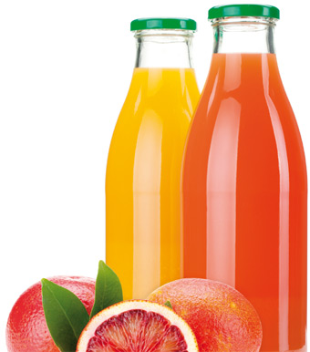

Les industriels disposent de cinq types principaux d’emballages : la brique en carton, la bouteille en verre, la bouteille en plastique, la boîte métallique et le « cheerpack » (gourde souple aluminée avec bouchon refermable).
Les emballages sont évolutifs et se caractérisent par un haut niveau de technicité et de créativité, tant sur la présentation que sur l’aspect pratique. Barrière contre les agressions extérieures, l’emballage joue un rôle essentiel dans la protection et la conservation du produit. Il protège de l’oxydation, des microbes, de la chaleur, de la lumière. Il facilite également le transport, l’échange et le stockage.
Le choix des matériaux utilisés vise également la réduction de la pollution à la source, l’allègement du poids des emballages et le recyclage des emballages après consommation du produit. Le conditionnement peut être effectué à chaud ou à froid, selon les propriétés du matériau d’emballage utilisé. Il peut être réalisé avant ou après le traitement de stabilisation microbiologique.
- Le conditionnement à chaud est effectué dans les bouteilles en verre, certaines briques et certaines bouteilles de PET fortement cristallisées qui résistent à 80°C. La température du jus assure alors la stérilisation de l’emballage.
- Le conditionnement à froid est utilisé pour les matériaux qui ne supportent pas la chaleur. Les emballages doivent alors être stérilisés avant le remplissage.
